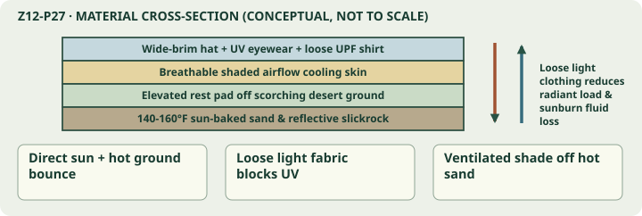

Z12-P27 · Extreme environments · New manuscript
Understand radiant solar load, hot ground reflection and sun-protective clothing
Lower direct sunburn, radiant heat absorption and evaporative fluid loss using loose breathable shade clothing.
When it applies · Open deserts, slickrock canyons, dry plains and unshaded high-UV summer environments.
Equipment · Loose light-colored long-sleeve UPF shirt and pants, wide-brim hat, UV sunglasses and broad-spectrum sunscreen.

Actions
- Cover skin with loose, light-colored, breathable long sleeves, long pants and a wide-brim hat—direct sunlight baking bare skin raises radiant heat gain, causes painful sunburn and impairs normal sweat cooling.[E08, E19, X07]
- Protect against upward ground radiation: light desert sand and slickrock reflect intense solar heat and UV from underneath while dark ground surfaces can exceed 140°F–160°F, burning thin sandals and dog paws.[X07, E19, ED]
- Elevate rest spots slightly off scorching sand/rock inside ventilated shade so hot ground conduction and still trapped air do not overheat resting travelers.[E19, E26, X07]
Failure recognition · Hiking shirtless in 105°F dry desert sun believing bare skin stays cooler, suffering severe sunburn and accelerating dehydration.[X07, E08, E19]
Verify · Confirm loose breathable full-coverage clothing, shaded neck/face brim, sturdy thick-soled boots and elevated ventilated midday rest shade.[X07, E19, ED]
Stop or change course · Severe sunburn with blistering, dizziness, chills or nausea indicates advancing heat illness—stop sun exposure immediately and initiate cooling and medical care.[T05, T09, E08]
Evidence and editorial notes
- E08 · CDC · About Heat and Your Health (current web edition)
- Section: Protect yourself from heat · Conditions: Outdoor activity in hot conditions
Support: Limit exertion in hot periods, take breaks in cooler places and monitor for illness.
Limitations: High humidity reduces sweat evaporation and raises heat strain at lower air temperatures. · Conflicting evidence: None; aligns with NWS-HEAT and NIOSH-H.
Editorial note: Anchors shade, pacing, and hot-weather shelter selection. · Specialist reviewer: Heat illness and emergency medicine
Primary source · checked 2026-11-24 - E19 · NWS · Heat Safety (current web edition)
- Section: Heat Safety Resources · vulnerability and linked protective actions · Conditions: High temperature and humidity outdoors
Support: Use current heat alerts and reduce exposure or seek cooled shelter when conditions warrant.
Limitations: This landing page does not quantify tent warming or universal evaporative cooling. See D21 for the bounded indoor fan guidance. · Conflicting evidence: None; aligns with CDC-HEAT and READY-HEAT.
Editorial note: Drives warm-weather tarp/shade configuration and ventilation cards. · Specialist reviewer: Heat safety and shelter design
Primary source · checked 2026-11-24
Current assessment · A04-E19 (2026-11-25) · Bounded support confirmed (A04): Follow local alerts and reduce exposure with appropriate cooling. Clinical heat injury, device limits and conflicting threats remain separate. Limits: Specialist review PENDING (Heat safety and shelter design); publication HOLD. All release decisions pending. - E26 · FEMA / Ready.gov · Extreme Heat (current web edition)
- Section: Extreme Heat > Stay Safe in Extreme Heat · Conditions: Prolonged heat waves and high overnight temperatures
Support: Use ventilated shade, hydration, light breathable clothing, and cooling centers when available; monitor vulnerable companions continuously for heat exhaustion or heat stroke.
Limitations: Shaded tarps reduce radiant load but cannot replace medical cooling when core temperature rises. · Conflicting evidence: None; aligns with CDC-HEAT and NWS-HEAT.
Editorial note: Supports hot-weather shelter orientation and heat-stress stop conditions. · Specialist reviewer: Heat safety and emergency medicine
Primary source · checked 2026-11-24 - T05 · CDC NIOSH · Heat-related Illnesses (current web edition)
- Section: Heat stroke > First aid · Conditions: Heat exposure and altered mental status
Support: Heat illness may be life-threatening. Seek emergency care for suspected heat stroke and start cooling promptly.
Limitations: Delays in active cooling worsen neurologic outcomes. · Conflicting evidence: None; aligns with CDC-HEAT.
Editorial note: Core heat-emergency escalation rule. · Specialist reviewer: Emergency and wilderness medicine
Primary source · checked 2026-11-24 - T09 · CDC NIOSH · Heat-related Illnesses (current web edition)
- Section: Heat stroke > Symptoms and First aid · Conditions: Suspected heat stroke after exertion or heat exposure
Support: Confusion, slurred speech or loss of consciousness can indicate heat stroke. Call 911 and cool the person promptly.
Limitations: Exertional heat stroke can occur even in moderate ambient temperatures during heavy effort. · Conflicting evidence: None; aligns with T05.
Editorial note: Triggers immediate emergency call and cooling stop condition. · Specialist reviewer: Emergency and wilderness medicine
Primary source · checked 2026-11-24 - X07 · NPS · Death Valley Safety (Desert Travel and Heat) (current web edition)
- Section: Death Valley Safety > Desert Heat, Dehydration, Flash Floods and Vehicle Breakdown · Conditions: Arid desert travel, canyon country and extreme summer heat
Support: Desert heat accelerates fluid and electrolyte loss rapidly, temperatures inside parked vehicles spike to fatal levels within minutes, dry washes flash-flood from distant storms and staying with a disabled road vehicle is generally safer than walking into extreme heat.
Limitations: Cell service is widely absent across desert basins; water needs can exceed 1 gallon/day dramatically during heat. · Conflicting evidence: None; aligns with CDC-HEAT and NWS-HEAT.
Editorial note: Core desert-environment evidence across Z12 heat/arid cards. · Specialist reviewer: Desert safety and emergency medicine
Primary source · checked 2026-11-24
Source lineage · NWS heat safety and NPS desert safety; new manuscript · Classification · New manuscript.